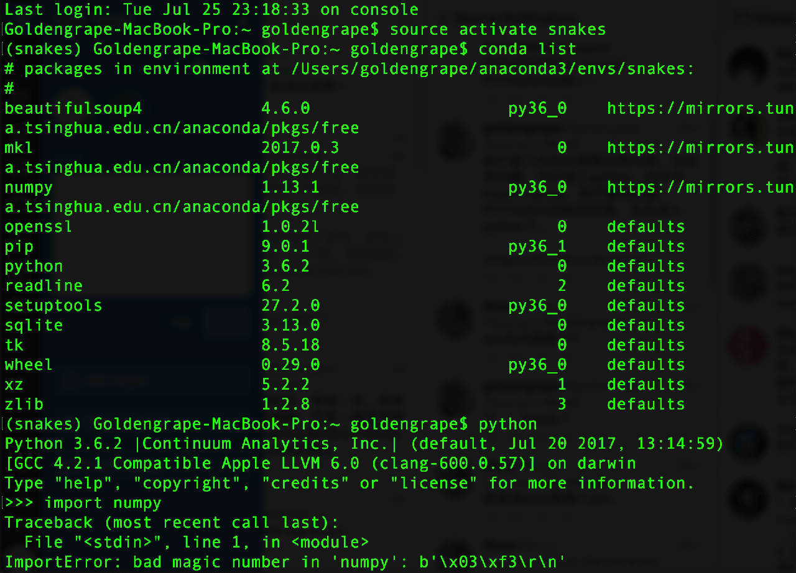
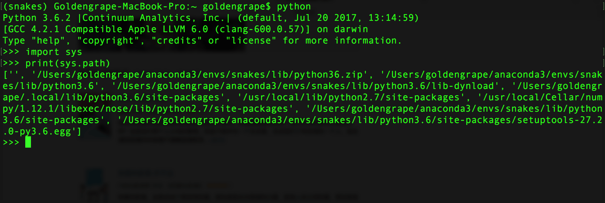

安装anaconda记
给python安装各种包绝对是噩梦，按照各种教程安装一定会出错！出各种错，你都不知道是在哪里除了问题。 以下就是我各种出错以后大难不死、绝境逢生、柳暗花明、再接再厉、一鼓作气以后拆拆装装的过程。 由于后面的话题早期过于沉重和压抑，所以我建议大家一起先吸只猫先：
然后，我强烈建议你不要再看下去了，并且强烈推荐你直接打开chrome浏览器，跳转到https://cocalc.com 这里是在线版的全功能云端数学软件包，你能够用到的所有python包都已经贮备好了，不论是什么openCV还是tensorflow只等你一句import而已。如果你就是打算学学python，不论是科学计算、网络处理还是机器学习。
- 到https://cocalc.com 用在线版
- 到https://cocalc.com 用在线版
- 到https://cocalc.com 用在线版
但如果你一定想做GUI，想在本地运行，想与本地用户用键盘鼠标交互或者偏要用摄像头之类的硬件，或者，就是想折腾，那也没办法，只好在本地安装python包。
选好安装器
我的电脑是2014年中的Macbook Pro，当前系统是Mac OS X 10.12.5。这事儿得写清楚，有好多教程不写明白，觉得天下人跟他的电脑都一样，凭什么啊！
就像初学python的各位一样，我也是先搜python的安装教程，怎么容易怎么来呗——这是一切恶果的原因。比如:
-
<在Mac OS X上安装Python — Python最佳实践指南>，用homebrew装python：
-
或者去学了一门python的在线课程， 按照老师的要求用canopy装python。
STOP！STOP！STOP
本文怨念太多，对于走过的坑通常要大喊三声警示。
太怨了，再吸口猫
为啥呢：
- 因为程序员们自己一直处于互相不对付的状态，python社区还没有从2还是3的圣战中解脱出来，目前看3是大势所趋，但仍然有大量的人坚守在python2.7，比如，coursera上那些老师，比如Mac OS自己自带的python。
- 因为实际情况里，不同的包可能依赖不同版本的python，别说是2到3这么大的差距，有的包没准不支持3.6，只支持3.5，所以即使你装上了python3，装这些包的时候仍然一大堆错。（tensorflow说你呢，放学别走！）
- 在直接安装python、用brew安装python或者用其他什么奇技淫巧安装python的时候，他们都会跑去修改PATH。别问我什么是PATH，大概就是一团乱麻的意思，而常规的安装方式都会去往乱麻里再塞一团线，有的还顺手抹胶水。
所以，作为只想写点简单代码的我们，不想掺合这些破事儿，最佳甚至唯一的方案就是： 在需要装某个特定版本python的时候，能够迅速装上“THE” python，而有不影响已经安装的其他python。 于是，能够把python自己的版本当作包装来装去的就是anaconda了。
插播换源
如果你在中国大陆使用开源软件，“换源”这个词是必知必会的，不然干什么都卡得要死要死的。有时候我在想，方校长的结肠癌手术是做的Miles么，会不会也这么卡。
把你用的开源软件名+换源放进google搜，比如anaconda+换源，比如docker+换源，比如raspberry pi+换源。
如果已经选错了
很糟糕的是，我之所以知道这些坑，是因为我都踩进去了。这里有实录. 鉴于实在是太长，太郁闷了，来，再吸口猫
简述一下我的问题是，PATH被搞乱了，python在找包的时候总是先去找Mac自带的2.7版本python下面的东西，没找到就报错（你丫倒是再去别的地方翻翻呐），我用其他工具装入的包就没办法import，于是我连import numpy as np都进行不下去。
我问题的原因是，我先使用homebrew安装了python2，python3；中间学习的时候用pip装了若干包，包括但不限于numpy，openCV（当然openCV是失败的）；然后才发现anaconda，结果anaconda装的包已经import不了了；觉得anaconda不好用于是又去找了canopy。所以，我的PATH一片混乱。
马志中教授说过，如果手术中出现问题，一定要先回到“正常”。对于计算机程序而言，我总结就是4个R：
- Reboot
- ReInstall
- rm -rf 最后一组R慎用。
于是我拆掉了anaconda，拆掉了canopy，拆掉了brew装进去的python，每次拆，都老实重启。但还是有问题, 你会看到最后冒出了magic number的事。

解决magic number问题是这样的，
import sys print(sys.path)

我发现无论如何我也干不掉’/usr/local/lib/python2.7/site-packages‘，那么，干脆进去看看吧。于是
cd /usr/local/lib/python2.7/site-packages ls
发现里面一直有一个numpy还有个cv2在里面，一怒之下用rm -rf删掉了。 所以，经验是要删掉/usr/local/lib/python2.7/site-packages里面看着不爽的包，务必斩草除根杀个片甲不留。
再补充一下“于是我拆掉了anaconda，拆掉了canopy，拆掉了brew装进去的python”的部分。
开源社区绝对有反社会倾向。或者至少写文档的人里反社会的居多。比如anaconda的uninstall文档 ，文档里说要卸载我们anaconda啊，有两种方案：
- 方案A很简单呢，你就去把装了anaconda的目录删了就行：rm -rf ~/anaconda3 你一看，这个很容易嘛，你就一删，就中计了。 文档后面还说，还有另一种方案，删得更彻底哦，
- 方案B，你要先用anaconda装个anaconda-clean，然后用anaconda-clean清理，最后再删anaconda的目录。如果你打算用方案B，那一定要在方案A之前哦。
有错么？没错。反人类么？我觉得反。 这跟律师在合同里用小号字写东西有什么区别？幸好我耐心看完了，选的B方案。
我跟你讲，看开源社区的文档，一定要读到最后，同时把手边易碎的东西拿走，摆张猫的图片。
装anaconda
主要动作我就不细说了，里面有坑的地方我会展开。
- 去 https://www.continuum.io/downloads 下载Anaconda 4.4.0 For macOS ，Python 3.6 version。注意下载Command Line Installer，你对开源社区一定要保持着高度的警觉，他们会在各处挖坑看你掉进去然后偷偷笑。比如如果你下载的是图形界面的，那么就会装到/anaconda 目录里，而所有的文档都说你的安装目录是~/anaconda3，于是你就会踩进坑里。
- 运行 bash Anaconda3-4.4.0-MacOSX-x86_64.sh
- 换源！换源！换源！https://mirror.tuna.tsinghua.edu.cn/help/anaconda/
- 仔细阅读并练习test drive文档 https://conda.io/docs/test-drive.html 当成雅思/托福/GRE阅读题来做。没读的话，他们一定会坑你。
安装tensorflow
我从最难的讲吧，如果你是打算用conda安装tensorflow，到anaconda的cloud里去搜索： 能够找到很多，然后发现for OSX-64的并不多。对于我来说，Macbook Pro用的不是Nvidia的显卡，而是intel的Iris显卡（什么破玩意），所以不行。 于是，找到一个： https://anaconda.org/anaconda/tensorflow 按照页面上的说明： To install this package with conda run:
conda install -c anaconda tensorflow
恭喜你，答错了！ 这样装tensorflow，至少在2017年7月，是会报错的，因为tensorflow当前最大支持到python3.5，而你的anaconda已经升级到python3.6了，于是报错报错报错，他还不告诉你这背后的原因。
正确的做法是，你先得建立一个python3.5的环境。也就是说先装入一个python3.5的“python包”，激活进入这个环境下，才能安装上tensorflow：
conda create --name tensorflow python=3.5 source activate tensorflow conda install --name tensorflow tensorflow
好了，今天就吐到这里。少折腾，多吸猫。